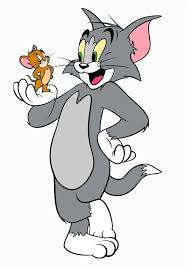

My First Blog
Today I started learning HTML, and I am excited to build amazing websites. This is my very first blog entry!
Hello! My name is Yashraj Mishra. I am passionate about coding, learning new technologies, and sharing knowledge with others.
Visit Google for more information.
My favorite hobby is playing Chess because it helps me improve my strategic thinking.
I love exploring new places.
I also enjoy reading science fiction novels.
"The only way to do great work is to love what you do." - Steve Jobs
My Favourite subject is Sanskrit. Updated Recently
I Love coding because it gives creativity and challenges.
To print in javascript we use console.log()
This is Blue, this is Green, and this is Red.
Learning HTML is fun and
exciting!
It allows you to create
beautiful and
interactive web pages.
Keep practicing and you'll become a pro in no time!
Happy coding!
I am a student who loves learning programming and web development. I enjoy solving real-world problems using technology.
Today I started learning HTML, and I am excited to build amazing websites. This is my very first blog entry!